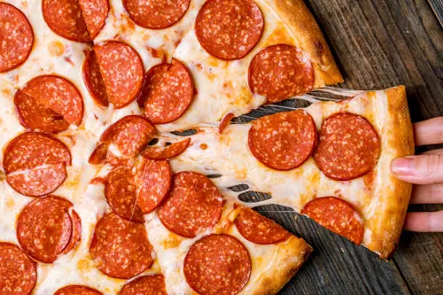

Homemade Pepperoni Pizza

Ingredients
- 1 pizza dough ball (store-bought or homemade)
- 1/2 cup tomato sauce
- 1 1/2 cups shredded mozzarella
- Pepperoni slices
- 1 tbsp olive oil
- 1 tsp dried oregano
- Fresh basil leaves (optional)
Steps
- Preheat the oven to 250°C (480°F) with a pizza stone or tray inside.
- Stretch or roll the dough into a round base.
- Brush the dough lightly with olive oil.
- Spread tomato sauce evenly, leaving a border for the crust.
- Sprinkle mozzarella over the sauce.
- Arrange pepperoni slices on top and sprinkle with oregano.
- Bake for 8-12 minutes until the crust is golden and cheese bubbles.
- Top with fresh basil and slice. Serve hot!
Cooking Terms Glossary
- Proof
- To let dough rest and rise before baking.
- Par-bake
- To partially bake a crust before adding toppings.
- Knead
- To work dough with your hands to develop gluten and elasticity.
- Preheat
- To heat the oven to the target temperature before putting food in.